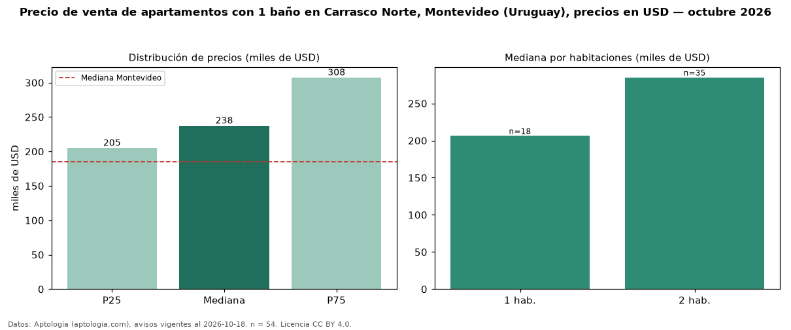

Precio de venta de apartamentos con 1 baño en Carrasco Norte, Montevideo (Uruguay), precios en USD — octubre 2026
Con 54 avisos vigentes, el precio mediano de apartamentos con 1 baño en venta en Carrasco Norte, Montevideo (Uruguay) es USD 237.500. Eso es 29 % menos que la mediana de todos los apartamentos en venta de Carrasco Norte (USD 336.716, n = 126); este segmento reúne el 43 % de esos avisos. Por metro cuadrado, la mediana es USD 3.370/m² (n = 54), 3 % por debajo del conjunto de referencia (USD 3.479/m²). El área mediana anunciada es 74 m². El segmento con más oferta es el de 2 habitaciones (35 avisos, mediana USD 285.000); pasar de 1 habitación a 2 habitaciones cambia la mediana +38 %. La mediana de todos los apartamentos en venta de Montevideo es USD 185.000 (+28 % de diferencia). La mitad central de los avisos va de USD 205.125 a USD 307.500 (razón 1,5), una dispersión moderada. Datos: Aptología (aptologia.com), CC BY 4.0 — https://www.aptologia.com/uy/venta/montevideo/carrasco-norte. Archivos: PDF, CSV con las cifras y gráfica PNG.

| Avisos únicos | 54 |
|---|---|
| Percentil 25 | COP 205.125 |
| Mediana | COP 237.500 |
| Percentil 75 | COP 307.500 |
| Mediana por m² | COP 3.370 |
Fuente: avisos vigentes de portales inmobiliarios recopilados por Aptología, deduplicados (mínimo 30 avisos únicos por celda). Precios pedidos, no cerrados. Fecha: 2026-10-18.